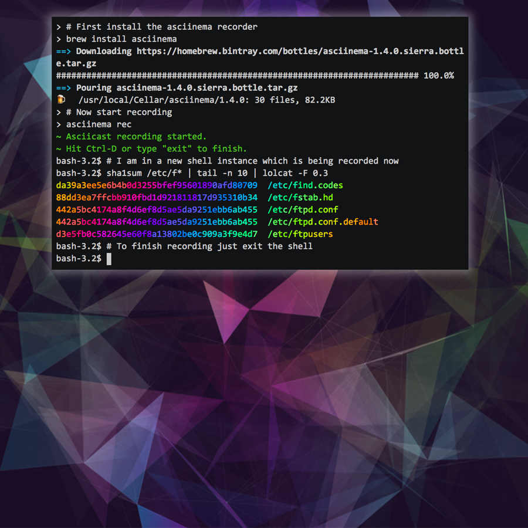

Repository
asciinema / asciinema
A lightweight, purely text-based approach to recording your terminal sessions.
A lightweight, purely text-based approach to recording your terminal sessions.
Create your own stories and visualizations

Build HTML5 games for web and mobile using the newly-released Phaser 3.0 JavaScript framework.
Tabler is free and open-source HTML Dashboard UI Kit built on Bootstrap 4
Make JSON greppable!
A WebGL accelerated, browser based JavaScript library for training and deploying ML models.
:books: 技术面试需要掌握的基础知识整理，欢迎编辑~
Simple, powerful online communities.
A workshop on Linux containers: Rebuild Docker from Scratch
Learn more about the world of open source and get ready to launch your own project.
Build your app on GitHub's platform, using some handy guides and reference documentation to help you start building.
Learn skills to enrich your campus's technology community.
Casual, mentored workshops for beginners to Git and GitHub.
Guides that help you use GitHub.
GitHub Classroom helps teachers and students manage their assignments on GitHub.
The best developer tools, free for students
Self-serve, on-demand courses to help you get the most out of GitHub.
A program for company employees to make regular open source contributions.
HTML is the fundamental markup language for webpages.
Koa is an expressive middleware framework for Node.js servers that uses ES2017 async functions.
Java is an object-oriented programming language used mainly for desktop and mobile applications.
JSON (JavaScript Object Notation) allows for easy interchange of data, often between a program and a database.
February & March • in 10 cities
March 2018 • Barcelona
June 2018 • Tokyo